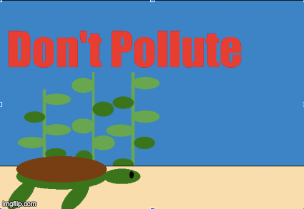
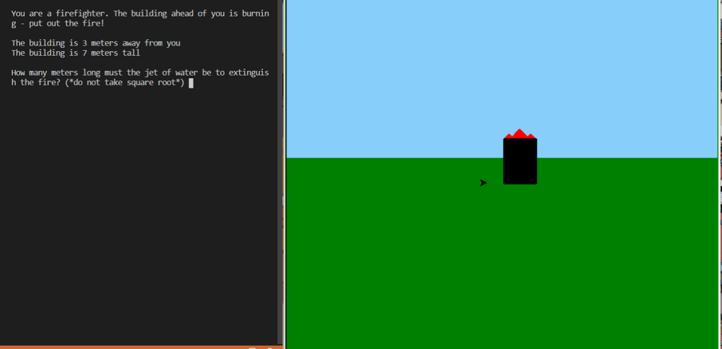
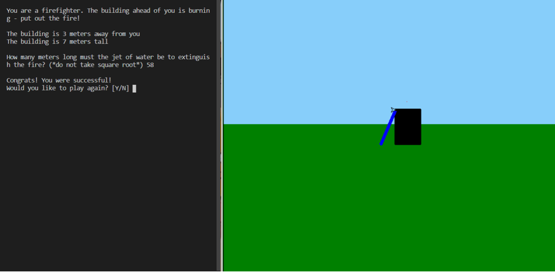

"Save the Turtles" was a short PSA animation about the effects of pollution on sea creatures such as turtles. It depicts an ocean setting of a bed of sand, seaweed, water, and a bag - the actual movement beginning with a fish swimming from the right side of the screen to the left. After this occurs, a sea turtle is shown swimming on screen in the opposite direction, stopping at the plastic bag. The bag disappears (eaten by turtle) and the turtle sinks to the bottom as the result of death. This animation was accomplished by inserting several gifs and using common turtle methods to control the movement portion and help create the background. For example, penup(), pendown(), begin_fill(), end_fill(), and fillcolor(), added to detail in the sandbed. Along with goto(), forward(), and left(), these methods not only allowed the shape of certain objects but the actual movement. Items disappearing (such as plastic bag) were due to the help of hideturtle() and the speed of the animation was done by speed().


"Firefighter" was a math game in which the goal was to put out a building on fire. A building with a randomly generated height (using randint function) is drawn, and the user acting as the firefighter will be a randomly generated distance away from that building. The program will then give the user the number of meters for distance and height, expecting them to compute the distance the jet of water will need to be in order to extinguish the fire (finding hypotenuse - pythagorean theorem). If the user inputs the incorrect number, they will fail and kill everyone, causing a message to display saying they lost the game. If they input the correct number and win, a message saying congratulations will appear. Regardless of whether the user wins or loses, an option to play the game again is displayed. If [n] is pressed, a simple 'thanks for playing' is shown. If [y] is pressed, the program restarts and a new building with a randomly generated height is drawn, as well as a randomly generated distance, allowing the user to attempt again.
img src="rocket_boosters.png" alt="rocket_boosters">
"Rocket Boosters" was an animation based off of user input. Stars are randomly generated against a black background and a planet gif is inserted at the top of the screen. A message appears, asking the user if they are prepared to fly. If answered with yes the program will continue smoothly, and the rocket will fly a horizontal path off screen. If answered with no, the rocket will then veer off path flying vertically into the planet. Upon impact the rocket will blow up. After these events, the user will be asked if they would like to fly again, resulting in the message "You crashed!" if they choose not to continue (and assuming they were not prepared to fly) or a complete restart of the game if they choose to.